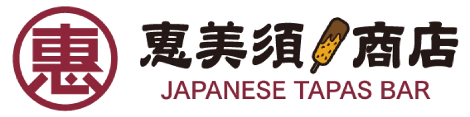

Ház Specialitása
Japán Tapasok és Kushikatsu
Aranybarnára sült, ropogós panko-bundás nyársak a ház titkos tare mártásával, edamame és szezonális kistányérok.

EN · HUJapán Tapas Bár és Izakaya
Ebisu Shoten
Ebisu Japán hét szerencseistene közül az egyetlen, aki tisztán honi eredetű — a halászok istene, mindig mosolyog, és mindig kicsit elkésik, mert nem hallja, amikor a többi isten szólítja az ég mennyezetéről. Ő vár. A jó dolgok a türelmesekhez érkeznek.
Az Ebisu Shoten — vagyis "Ebisu boltja" — ugyanezzel a gondolattal nyílt meg a Gozsdu Udvarban, a Dob utcai passzázsban, Budapest régi zsidónegyedében. Üljön le a pulthoz. Hagyja, hogy a parázs végezze a dolgát. Nyársak binchōtan faszénen, aznap reggel beérkezett alapanyagokból készült kistányérok, és egy mélyen feltöltött bárpult szakéval, shōchūval és japán whiskyvel.
Asztal foglalásaEbisu Shoten Élmény
Nincs két egyforma este a pultnál — a hal az árapállyal változik, a szakélista az évszakokkal fordul. Térjen vissza gyakran, és még mindig meg fogja lepni.
Konyha és Bár
Budapest is az ellentétek városa — nagy sugárutak és hátsó utcai bárok, romkocsmák és csendes pultok. Az Ebisu Shoten ebben a második Budapestben található: jelöletlen ajtó, tompa fény, semmi kapkodás.
Ott van a kézzel forgatott csirkében a binchōtan felett. Ott van a harminc-egynéhány szakésüvegben, amelyeket a megfelelő hőmérsékleten tartunk, és mindegyiket olyasvalaki tölti ki, aki el is tudja mondani, miért éppen azt. És ott van abban, hogy az étlapot elég rövidre fogjuk ahhoz, hogy minden rajta lévő étel rendesen elkészüljön.
Nézze meg a mai kínálatotKínálatunk & Mesterségünk
Aranybarnára sült, ropogós panko-bundás nyársak a ház titkos tare mártásával, edamame és szezonális kistányérok.
Prémium minőségű lazac, kékúszójú tonhal és fésűkagyló mesteri pontossággal szeletelve, fűszerezett Koshihikari rizzsel.
Hosszan főzött sűrű alaplevek, selymes kézműves tészták és illatos arany japán katsu curry a teljes kényeztetésért.
Jéghideg highballok pezsgő szódával, kézműves Junmai és Daiginjo szakék, és ropogós csapolt Asahi Super Dry.
Ünnepelje születésnapját, céges vacsoráját vagy privát eseményét hangulatos, lampionos éttermünkben vagy félprivát pultunknál.
Látogatás